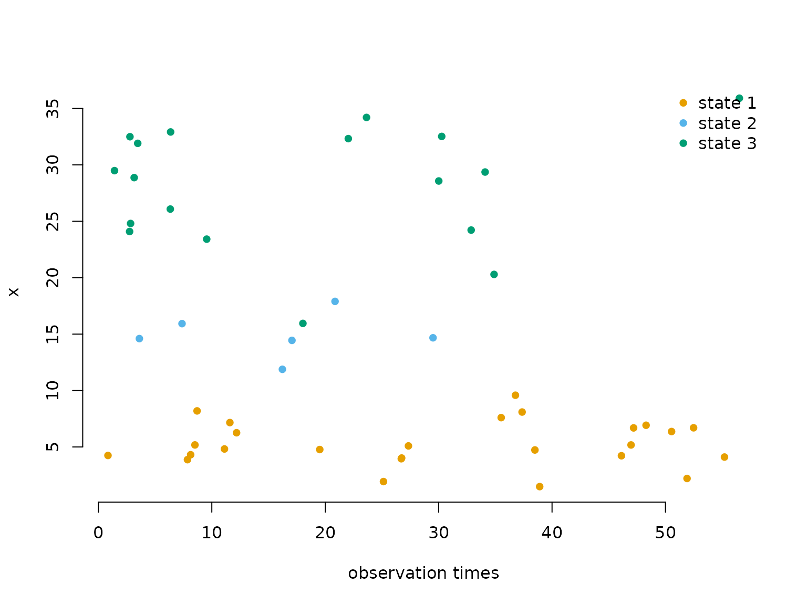
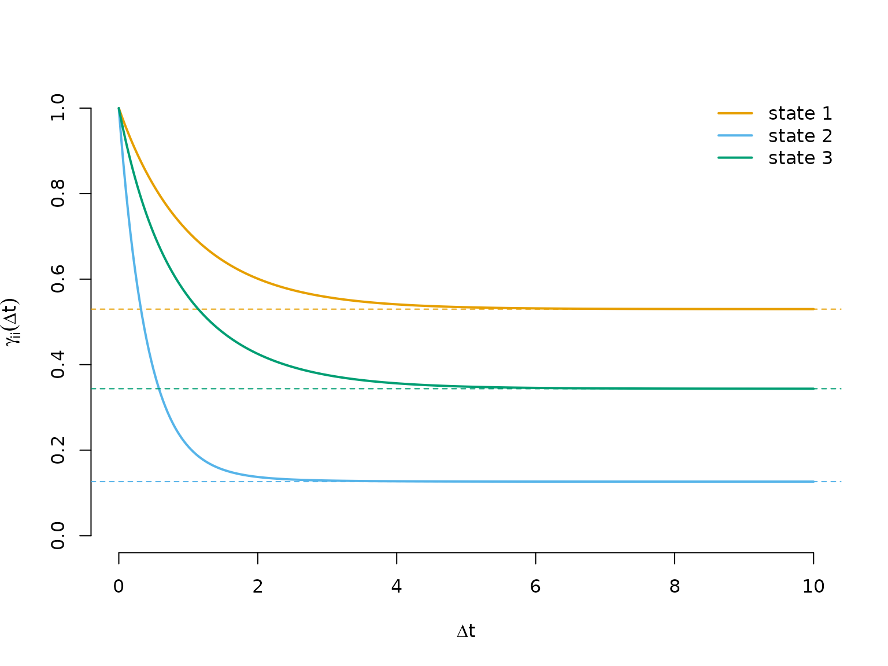
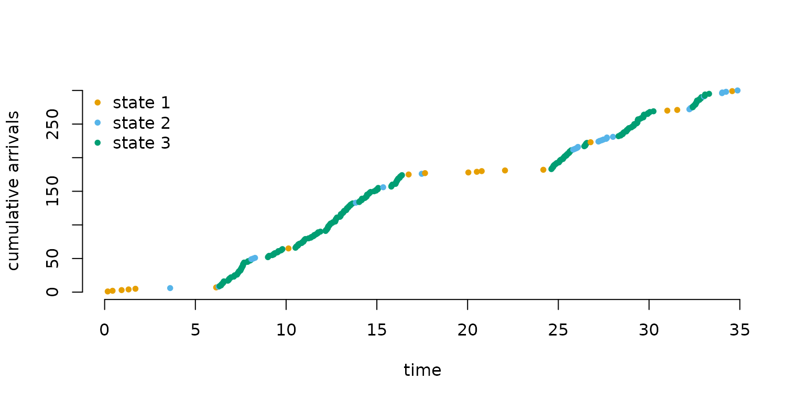
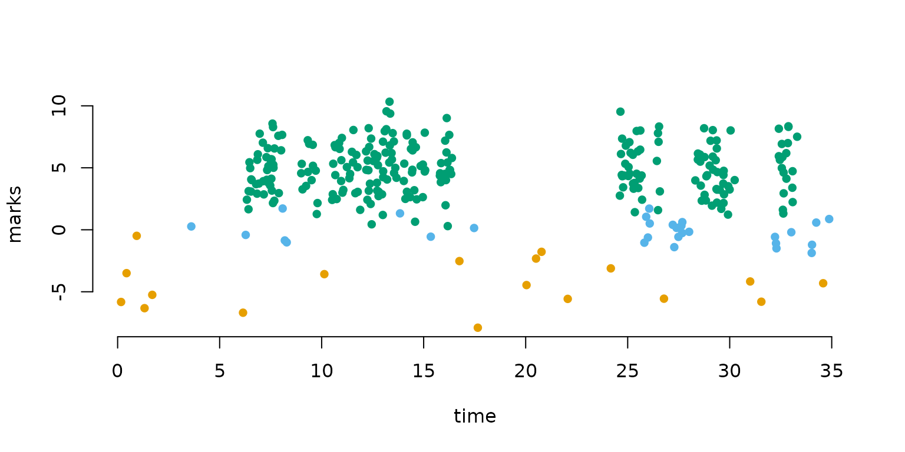
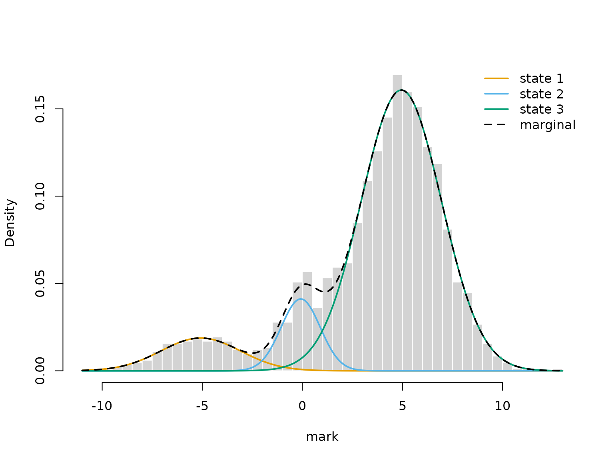

6 Continuous-time models
Jan-Ole Fischer
Continuous_time_models.RmdBefore diving into this vignette, we recommend reading the vignettes Introduction to LaMa and Finer control.
In standard HMMs, observations are assumed to arrive at regular, equidistant time points, so that the transition probability matrix \boldsymbol{\Gamma} can be given a consistent interpretation with respect to a fixed time unit (e.g. one hour or one day). In many real-world applications this assumption breaks down: animal telemetry fixes arrive at varying intervals, patient measurements are taken at unequal times, or data simply have gaps. Using a regular HMM in such cases leads to a misspecified transition structure, because the same \boldsymbol{\Gamma} is applied regardless of whether the time gap is short or long.
The natural remedy is to replace the discrete-time Markov chain with a continuous-time Markov chain (CTMC). This vignette covers two cases:
- Uninformative observation times: the times are fixed or unrelated to the state process, and only the observed values carry information about the states. This leads to continuous-time HMMs.
- Informative observation times: the times are themselves generated by the state process, as for events that occur at a state-dependent rate. This leads to Markov-modulated (marked) Poisson processes.
The generator matrix
A CTMC is fully characterised by its (infinitesimal) generator matrix \boldsymbol{Q} = \begin{pmatrix} -q_1 & q_{12} & \cdots & q_{1N} \\ q_{21} & -q_2 & \cdots & q_{2N} \\ \vdots & \vdots & \ddots & \vdots \\ q_{N1} & q_{N2} & \cdots & -q_N \\ \end{pmatrix}, where q_{ij} \geq 0 for i \neq j and q_i = \sum_{j \neq i} q_{ij}, so that every row sums to zero.
The off-diagonal entry q_{ij} is the instantaneous rate at which the process transitions from state i to state j. Their sum q_i is the total leaving rate from state i, and the dwell time (time spent in state i before leaving) is exponentially distributed with rate q_i, i.e. with mean 1/q_i. Conditional on leaving state i, the probability of moving to state j \neq i is \omega_{ij} = \frac{q_{ij}}{q_i}. These two properties — the dwell time distribution and the conditional next-state probabilities — together fully describe the dynamics of the chain.
Throughout this vignette, we use the 3-state generator below. The mean dwell times are 1/0.5 = 2, 1/2 = 0.5 and 1/1 = 1 time units, so state 1 is the most persistent state.
From the generator to transition probabilities
Given \boldsymbol{Q} and a time
interval of length \Delta t, the
transition probability matrix is obtained via the matrix
exponential:
\boldsymbol{\Gamma}(\Delta t) = \exp(\boldsymbol{Q} \, \Delta t).
This follows from the Kolmogorov forward equations; see Dobrow (2016) for details. The key
practical point is that \boldsymbol{\Gamma}(\Delta t) automatically
adapts to the length of the interval: short gaps produce a matrix close
to the identity (little chance of switching), and long gaps produce a
matrix close to the stationary distribution (the process has had time to
mix). LaMa computes this efficiently for an entire vector
of time differences using tpm_ct():
Gammas = tpm_ct(Q, c(0.1, 10)) # one matrix per time difference
round(Gammas[,,1], 3) # short gap: close to the identity
#> S1 S2 S3
#> S1 0.953 0.018 0.029
#> S2 0.090 0.822 0.088
#> S3 0.040 0.052 0.908
round(Gammas[,,2], 3) # long gap: each row close to the stationary distribution
#> S1 S2 S3
#> S1 0.543 0.147 0.31
#> S2 0.543 0.147 0.31
#> S3 0.543 0.147 0.31
stationary_ct(Q)
#> S1 S2 S3
#> 0.5426357 0.1472868 0.3100775Uninformative observation times: continuous-time HMMs
A continuous-time HMM combines the CTMC with a state-dependent observation process, observed at irregular times that carry no information about the states. One important prerequisite is the snapshot property: the observed value at time t may only depend on the state at that instant, not on the history of the process or on how much time has elapsed since the previous observation. This is a reasonable assumption for many biological and physical processes. For more details see Glennie et al. (2023).
Likelihood
The likelihood of a continuous-time HMM for observations x_{t_1}, \dots, x_{t_T} at irregular times
t_1 < \dots < t_T has
exactly the same structure as the regular HMM
likelihood:
L(\boldsymbol{\theta}) = \boldsymbol{\delta}^{(1)}
\boldsymbol{P}(x_{t_1})\, \boldsymbol{\Gamma}(\Delta t_1)\,
\boldsymbol{P}(x_{t_2})\, \boldsymbol{\Gamma}(\Delta t_2)\,
\boldsymbol{P}(x_{t_3}) \cdots \boldsymbol{\Gamma}(\Delta t_{T-1})\,
\boldsymbol{P}(x_{t_T})\, \boldsymbol{1}^\top,
where \Delta t_k = t_{k+1} -
t_k and each \boldsymbol{\Gamma}(\Delta
t_k) = \exp(\boldsymbol{Q} \,\Delta t_k) is specific to its
interval. The initial distribution \boldsymbol{\delta}^{(1)} is typically set to
the stationary distribution of the CTMC, available via
stationary_ct(). Everything else — the allprobs matrix and
the forward algorithm via forward() — is identical to the
regular HMM case.
Writing the negative log-likelihood function
The likelihood function follows the same pattern as a regular
inhomogeneous HMM. The only addition is the generator() and
tpm_ct() calls: generator() maps the
unconstrained log_qs vector (one entry per off-diagonal
element of \boldsymbol{Q}, on the log
scale to ensure positivity) to a valid generator matrix, and
tpm_ct() computes \exp(\boldsymbol{Q} \, \Delta t) for every
observed time difference at once. For the initial distribution,
stationary_ct() computes the stationary distribution
directly from \boldsymbol{Q}.
forward() itself never sees \boldsymbol{Q}, only the matrices \exp(\boldsymbol{Q} \, \Delta t). With
delta = "stationary", it would compute the stationary
distribution of the first of these, which gives the same result, as
\exp(\boldsymbol{Q} \, \Delta t) has
the same stationary distribution as \boldsymbol{Q} for any \Delta t > 0.
nll = function(par) {
getAll(par, dat)
mu = exp(log_mu); REPORT(mu)
sigma = exp(log_sigma); REPORT(sigma)
Q = generator(log_qs); REPORT(Q) # maps unconstrained params -> valid Q
delta = stationary_ct(Q) # stationary distribution of the CTMC
Qube = tpm_ct(Q, timediff) # exp(Q * dt) for each time difference
allprobs = statedens(x, dnorm, mu, sigma)
-forward(delta, Qube, allprobs)
}Simulating data
We first draw the observation times as a Poisson process with rate
1, i.e. with exponentially distributed
time differences. This represents an irregular but otherwise
uninformative observation mechanism that is not part of the
model. Given these times, we simulate states and observations
from the model with the same likelihood function: we build the AD object
at the true parameters with an all-NA placeholder for
x, and simulate() draws each state from the
row of \boldsymbol{\Gamma}(\Delta t)
belonging to the previous state, and each observation given its state
(see the vignette Longitudinal
data for details). generator() fills the
off-diagonal entries of \boldsymbol{Q}
by column, so Q[row(Q) != col(Q)] gives them in the right
order.
mu = c(5, 15, 30) # state-dependent means
sigma = c(2, 3, 5) # state-dependent standard deviations
set.seed(123)
n = 500
obs_times = cumsum(rexp(n, 1)) # irregular observation times
par_true = list(
log_mu = log(mu),
log_sigma = log(sigma),
log_qs = log(Q[row(Q) != col(Q)]) # off-diagonal entries of Q
)
dat = list(
x = rep(NA, n), # placeholder for the observations
timediff = diff(obs_times)
)
sim = simulate(lama(MakeADFun(nll, par_true, silent = TRUE)), seed = 123)
dat$x = sim$xThe plot below shows the first 50 observations, coloured by their true (latent) state, illustrating the irregular observation times.
color = LaMaColors(3)
plot(obs_times[1:50], sim$x[1:50], pch = 16, bty = "n", col = color[sim$state[1:50]],
xlab = "observation times", ylab = "x")
legend("topright", pch = 16, col = color, legend = paste("state", 1:3), box.lwd = 0)
Fitting the model
A 3-state model has N(N-1) = 6 off-diagonal entries in \boldsymbol{Q}.
par = list(
log_mu = log(c(5, 10, 25)), # initial state-dependent means
log_sigma = log(c(2, 2, 6)), # initial state-dependent sds
log_qs = rep(0, 6) # initial off-diagonal generator entries (exp(0) = 1)
)
obj = MakeADFun(nll, par, silent = TRUE)
system.time(
opt <- nlminb(obj$par, obj$fn, obj$gr)
)
#> user system elapsed
#> 0.378 0.000 0.378
mod = lama(obj)Results
mod$mu # true: 5, 15, 30
#> [1] 5.127977 15.148462 29.667402
mod$sigma # true: 2, 3, 5
#> [1] 2.015374 2.594025 5.358427
round(mod$Q, 3) # true: Q as defined above
#> S1 S2 S3
#> S1 -0.463 0.182 0.281
#> S2 1.046 -2.133 1.088
#> S3 0.329 0.504 -0.833The estimated generator can be interpreted directly: the mean dwell time in each state is 1/\hat{q}_i.
round(1 / diag(-mod$Q), 2) # estimated mean dwell times; true: 2, 0.5, 1
#> S1 S2 S3
#> 2.16 0.47 1.20The transition probability curves show how quickly the process mixes as the time difference grows. At \Delta t = 0, the probability \gamma_{ii}(\Delta t) of being in state i again after \Delta t is one; as \Delta t \to \infty it converges to the stationary probability of state i (dashed lines), reflecting full mixing.
dt_seq = seq(0, 10, length.out = 300)
Qube_seq = tpm_ct(mod$Q, dt_seq)
delta = stationary_ct(mod$Q)
plot(NA, xlim = c(0, 10), ylim = c(0, 1), bty = "n",
xlab = expression(Delta*t), ylab = expression(gamma[ii](Delta*t)))
for(i in 1:3) {
lines(dt_seq, Qube_seq[i, i, ], lwd = 2, col = color[i])
abline(h = delta[i], lty = 2, col = color[i]) # long-run limit
}
legend("topright", lwd = 2, col = color, legend = paste("state", 1:3), bty = "n")
We can also decode the most probable hidden state sequence using
viterbi(). Because forward() automatically
reports the initial distribution, the transition probability matrices
and allprobs, we can pass the model object directly. As the
data are simulated, we can compare the decoded states with the true
ones.
Informative observation times: Markov-modulated Poisson processes
In a continuous-time HMM, the observation values carry information about the latent state, while the observation times are uninformative. The Markov-modulated Poisson process (MMPP) reverses this: the arrival times themselves are the observations, and their spacing carries information about the hidden state process.
The CTMC modulates the rate of a Poisson process: while the chain stays in state j, events arrive at a constant, state-specific rate \lambda_j. A high-rate state produces rapid bursts of closely spaced arrivals; a low-rate state produces sparse events. The Markov-modulated marked Poisson process (MMMPP) additionally associates a random mark y_i with each arrival, drawn from a state-dependent distribution at the moment of arrival, providing a second source of information about the latent state alongside the timing. For more background see Meier-Hellstern (1987) and Langrock et al. (2013).
Likelihood
For n arrivals at times t_1 < \dots < t_n, let \Delta t_i = t_{i+1} - t_i be the inter-arrival waiting times and \boldsymbol{\Lambda} = \text{diag}(\lambda_1, \dots, \lambda_N) the diagonal matrix of state-dependent rates. The likelihood of a stationary MMMPP is L(\boldsymbol{\theta}) = \boldsymbol{\pi}\,\boldsymbol{P}(y_1) \Bigl(\prod_{i=1}^{n-1} \exp\bigl((\boldsymbol{Q} - \boldsymbol{\Lambda})\,\Delta t_i\bigr)\,\boldsymbol{\Lambda}\,\boldsymbol{P}(y_{i+1})\Bigr)\,\boldsymbol{1}^\top, where \boldsymbol{\pi} is the stationary distribution of the CTMC and \boldsymbol{P}(y_i) is a diagonal matrix of state-dependent densities evaluated at mark y_i. The matrix \exp((\boldsymbol{Q} - \boldsymbol{\Lambda})\,\Delta t_i) propagates the state distribution through gap \Delta t_i while accounting for the fact that no event occurred during this interval; \boldsymbol{\Lambda} then contributes the instantaneous rate of the event that does occur at the end of the gap. Without marks (MMPP), the matrices \boldsymbol{P}(y_i) are simply dropped.
This has exactly the same structure as the regular
HMM likelihood, so forward() applies directly.
tpm_ct(Q, timediff, lambda) computes the matrices \exp((\boldsymbol{Q} - \boldsymbol{\Lambda})\,\Delta
t_i), and we fold \boldsymbol{\Lambda} into the
allprobs matrix: after computing the mark densities for all
n arrivals, rows 2, \dots, n are multiplied by (\lambda_1, \dots, \lambda_N). For an MMPP,
allprobs would hence have a first row of ones and all other
rows equal to (\lambda_1, \dots,
\lambda_N).
Writing the negative log-likelihood function
Unlike for the continuous-time HMM,
forward("stationary", ...) would be wrong here: the
matrices \exp((\boldsymbol{Q} -
\boldsymbol{\Lambda})\,\Delta t_i) are not transition probability
matrices (their rows sum to less than one), so their “stationary
distribution” is not the one of the CTMC. The stationary distribution
has to come from \boldsymbol{Q} via
stationary_ct().
nll2 = function(par) {
getAll(par, dat)
lambda = exp(log_lambda); REPORT(lambda)
REPORT(mu)
sigma = exp(log_sigma); REPORT(sigma)
Q = generator(log_qs); REPORT(Q)
delta = stationary_ct(Q)
Qube = tpm_ct(Q, timediff, lambda) # exp((Q - Lambda) * dt)
allprobs = statedens(marks, dnorm, mu, sigma)
# multiply rows 2:n by lambda to fold in the arrival-rate contribution
allprobs[-1, ] = allprobs[-1, ] * rep(lambda, each = length(timediff))
-forward(delta, Qube, allprobs)
}Simulating data
As the arrival times are now part of the data, we simulate them
directly: we draw the sequence of states using the conditional
next-state probabilities \omega_{ij}
and the exponential dwell times, and then within each sojourn of length
dwell a Poisson number of arrivals with mean
lambda * dwell, uniformly distributed over the sojourn.
Each arrival gets a mark from the distribution of its state.
lambda = c(1, 5, 20) # state-dependent arrival rates
mu = c(-5, 0, 5) # state-dependent mark means
sigma = c(2, 1, 2) # state-dependent mark sds
set.seed(123)
k = 200 # number of sojourns
s = numeric(k)
s[1] = sample(1:3, 1, prob = stationary_ct(Q))
for(t in 2:k) {
omega = Q[s[t-1], ] / -Q[s[t-1], s[t-1]] # conditional next-state probabilities
omega[s[t-1]] = 0
s[t] = sample(1:3, 1, prob = omega)
}
dwell = rexp(k, -diag(Q)[s]) # dwell times
end = cumsum(dwell) # end of each sojourn
# Poisson arrivals, uniformly distributed within each sojourn
n_arr = rpois(k, lambda[s] * dwell)
arrival_times = unlist(lapply(1:k, function(t) sort(runif(n_arr[t], end[t] - dwell[t], end[t]))))
state = rep(s, n_arr) # true state at each arrival
marks = rnorm(length(arrival_times), mu[state], sigma[state])In the cumulative arrivals plot, the slope of the curve equals the current arrival rate, so steep segments correspond to the bursty state 3 and shallow segments to state 1. The marks additionally separate the states.
plot(arrival_times[1:300], 1:300, pch = 20, bty = "n", col = color[state[1:300]],
xlab = "time", ylab = "cumulative arrivals")
legend("topleft", pch = 20, col = color, legend = paste("state", 1:3), box.lwd = 0)
plot(arrival_times[1:300], marks[1:300], pch = 16, bty = "n", col = color[state[1:300]],
xlab = "time", ylab = "marks")

Fitting the model
par = list(
log_lambda = log(c(2, 4, 15)), # initial arrival rates
mu = c(-4, 0, 4), # initial mark means
log_sigma = log(c(1, 1, 1)), # initial mark sds
log_qs = rep(log(0.5), 6) # initial off-diagonal generator entries
)
dat = list(
marks = marks,
timediff = diff(arrival_times)
)
obj2 = MakeADFun(nll2, par, silent = TRUE)
system.time(
opt2 <- nlminb(obj2$par, obj2$fn, obj2$gr)
)
#> user system elapsed
#> 1.437 0.000 1.436
mod2 = lama(obj2)Results
mod2$lambda # true: 1, 5, 20
#> [1] 1.027830 5.279531 20.415102
mod2$mu # true: -5, 0, 5
#> [1] -5.07970209 -0.08297297 4.94687866
mod2$sigma # true: 2, 1, 2
#> [1] 1.9861570 0.9762275 1.9998627
round(mod2$Q, 3) # true: Q as defined above
#> S1 S2 S3
#> S1 -0.458 0.240 0.218
#> S2 1.370 -2.505 1.136
#> S3 0.393 0.658 -1.051
round(1 / diag(-mod2$Q), 2) # mean dwell times; true: 2, 0.5, 1
#> S1 S2 S3
#> 2.18 0.40 0.95Overlaying the fitted state-dependent densities on a histogram of all marks provides an intuitive model check. Note that the mixture weights are not the stationary distribution \pi_j (proportion of time in state j) but the rate-weighted proportions w_j \propto \pi_j \lambda_j – states with higher arrival rates contribute disproportionately more marks.
pi = stationary_ct(mod2$Q)
w = pi * mod2$lambda / sum(pi * mod2$lambda) # proportion of marks from each state
hist(marks, prob = TRUE, breaks = 50, border = "white", main = "", xlab = "mark")
for (j in 1:3) {
curve(w[j] * dnorm(x, mod2$mu[j], mod2$sigma[j]),
add = TRUE, lwd = 2, col = color[j], n = 300)
}
curve(rowSums(sapply(1:3, function(j) w[j] * dnorm(x, mod2$mu[j], mod2$sigma[j]))),
add = TRUE, lwd = 2, lty = 2, n = 300)
legend("topright", lwd = 2, lty = c(1, 1, 1, 2), bty = "n",
col = c(color, "black"), legend = c(paste("state", 1:3), "marginal"))
State decoding via viterbi() combines both timing and
mark information to assign the latent state:
states2 = viterbi(mod2)
mean(states2 == state) # proportion of correctly decoded states
#> [1] 0.9933414Continue reading with State-space models.